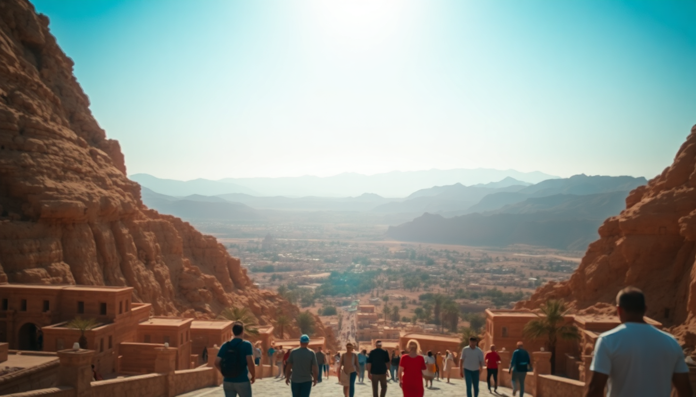

Best Time to Visit Luxor: A Seasonal Guide

I landed in Luxor on a July afternoon and felt like I’d walked into a hair dryer set on high. The heat was brutal, but the temples were empty. By my second trip in December, I was layering a fleece at sunrise for the balloon ride over the Valley of the Kings. This guide breaks down what each season actually feels like on the ground—so you can pick your trade-off between comfort, crowds, and cost.
What is the weather like in Luxor by season?
Luxor sits in the desert, so forget coastal humidity. Winters (December–February) are mild and sunny, with daytime highs around 22–26°C (72–79°F). Nights drop to 8–10°C (46–50°F)—I needed a jacket for the 5 a.m. balloon launch. Spring (March–May) heats up fast, hitting 35°C (95°F) by May, with occasional sandstorms (khamsin) in March and April. Summer (June–August) is brutal: 40–45°C (104–113°F) daily, but dry heat makes it bearable in short bursts. Fall (September–November) is the sweet spot—temperatures ease from 38°C in September down to a pleasant 28°C by November.
- Winter (Dec–Feb): Perfect for sightseeing, but pack layers for dawn and dusk.
- Spring (Mar–May): Warming fast; avoid March if you hate gritty wind.
- Summer (Jun–Aug): Empty temples, but you’ll be drenched by 9 a.m.
- Fall (Sep–Nov): Best balance of heat and emptiness—November is my pick.
When are the best months for visiting the Valley of the Kings?
I’ve done the Valley of the Kings in both July and December. July meant I had the tomb of Ramesses VI almost to myself—but I was panting after climbing the ramp. December was comfortable but crowded; the queue for Tutankhamun’s tomb snaked for 40 minutes. The sweet spot is October or November, when temperatures hover around 30°C and tour buses thin out after the September rush. Arrive at 6 a.m. when the gates open, hit KV 11 (Ramesses III) and KV 2 (Ramesses IV) first—they’re deep and cool inside. Skip the Valley if it’s forecasted over 42°C; the walk from the parking lot to the tombs is exposed and long.
- October–November: Low crowds, 30°C highs, and the light is golden for photos.
- April–May: Still manageable if you go early; the Temple of Hatshepsut nearby is less crowded at 7 a.m.
- June–August: Only if you’re a masochist or on a tight budget—hotels drop rates by 40%.
How do crowds and prices change throughout the year?
Luxor’s peak season runs from November through February. The Winter Palace Hotel (historic, on the Corniche) was fully booked when I tried to extend my December stay—I ended up at the Sofitel Winter Palace, which was double the off-season rate. March and April see a dip, but Easter week spikes prices again. Summer is the cheapest: I paid $35 a night at Al Moudira Hotel (a gorgeous boutique on the West Bank) in July, versus $120 in December. Cruise ships dock heavily between October and April—the Nile Pharaoh and MS Mayflower are common sights—so the East Bank corniche gets packed.
- High season (Nov–Feb): Book hotels three months ahead. Karnak Sound & Light Show sells out weekly.
- Shoulder (Mar–Apr, Sep–Oct): Good deals on Booking listings; fewer cruise crowds.
- Low season (May–Aug): You’ll haggle half-price for feluccas at the Nile Corniche.
Is summer in Luxor really unbearable?
Yes and no. I spent a week in August and learned the rhythm: wake at 5 a.m., see Karnak Temple by 7:30 (it’s already 35°C), take a nap from noon to 4 p.m., then explore the Luxor Temple at night when it’s floodlit and 30°C. The Mummification Museum (small, air-conditioned) became my afternoon refuge. Most felucca captains won’t sail between 11 a.m. and 3 p.m., but the sunset rides are sublime—I paid 150 EGP for a private hour-long trip. Summer is also the only time you’ll have the Colossi of Memnon entirely to yourself for a photo without tourists climbing on them.
- Pros: Empty sites, dirt-cheap hotels, dramatic heat-haze sunsets.
- Cons: Heat exhaustion is real—I carried 2 liters of water per person and a spray bottle.
- Tip: Stay at a place with a pool. Hilton Luxor Resort has a great one on the Nile.
What about sandstorms and holidays in Luxor?
The khamsin wind hits March and April, turning the sky orange and coating everything in grit. I was at Karnak Temple during one—the columns blurred into a sepia fog, and I coughed for days. Avoid these months if you have asthma. Ramadan (dates shift yearly) means many restaurants close during daylight, but Sofra Restaurant & Café (my favorite for koshari and grilled pigeon) opens after sunset—book ahead. The Luxor African Film Festival in March brings a lively crowd, but hotel prices jump.
- Khamsin (Mar–Apr): Check wind forecasts; pack N95 masks and eye drops.
- Ramadan: Dinner at El-Kababgy near the Luxor Temple is excellent post-iftar.
- Easter/Christmas: Book everything three months ahead; the Valley of the Kings gets 5,000 visitors a day.
FAQ
Is Luxor safe to visit right now? Yes. I’ve been twice post-2020. The tourist police presence is heavy around Karnak, Luxor Temple, and the West Bank. The main risk is touts and traffic—cross the street in Luxor like a local: make eye contact with the driver and walk steady. Avoid political demonstrations in Cairo, but Luxor is insulated.
How many days do I need in Luxor? Three full days minimum. Day 1: East Bank—Karnak in the morning, Luxor Museum in the afternoon. Day 2: West Bank—Valley of the Kings, Temple of Hatshepsut, Colossi of Memnon. Day 3: hot air balloon at dawn, then a felucca ride or visit the Temple of Dendera (90 minutes north by taxi).
Should I stay on the East Bank or West Bank? East Bank if you want nightlife and restaurants—I liked Nefertiti Hotel for its rooftop view of the Luxor Temple. West Bank if you want quiet and proximity to the tombs—Al Moudira Hotel is a 15-minute drive from the Valley of the Kings, but you’ll need a taxi or hire a driver for dinner.
Conclusion
- Visit October–November or February–March for the best mix of tolerable heat and thin crowds.
- Summer works if you can handle 40°C+ and prefer empty temples over comfort.
- Book the hot air balloon over the Valley of the Kings in winter—the sunrise visibility is unmatched.
- Stay on the West Bank for tomb access, East Bank for the corniche and food scene.
- Pack a reusable water bottle, sun hat, and closed-toe shoes for the sandy paths at Karnak and the Valley.